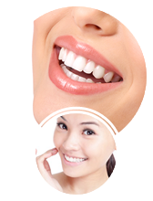

ฟอกฟันขาวได้เองที่บ้าน
ไม่ว่าฟันจะเหลืองแค่ไหนก็ตาม
ลักษณะฟันทุกประเภท
ปากกาที่ช่วยทำให้ฟันขาวขึ้นลักซ์เซอรี่ ไวท์โปร (Luxury White) เป็นหนึ่งในเทคโนโลยีที่ทันสมัยมากที่สุด ในการคืนสีฟันธรรมชาติให้กับคุณได้ง่าย ๆ ที่บ้าน เป็นเทคโนโลยีที่ได้รับการพัฒนาขึ้นมาและใช้กันแพร่หลายทั่วโลก และตอนนี้มีพร้อมให้คนไทยได้ใช้แล้ว
เทคโนโลยีที่ใช้รังสรรค์ปากกานี้ขึ้นนั้นคือ การใช้เจลทำให้ฟันขาวคุณภาพสูงที่ประกอบด้วยคาบาไมด์เพอร็อกไซด์ 35% - ซึ่งเป็นสารที่ปล่อยออกซิเจนออกมาซึ่งเห็นได้ภายใต้แสง LED และเมื่อเปรียบเทียบกับเทคโนโลยีอื่น ๆ เทคโนโลยีนี้ฟอกสีฟันนี้ ให้ผลลัพธ์ที่ยอดเยี่ยมปราศจากความเจ็บปวดและปลอดภัย 100% ด้วยวิธีการนี้ไม่ทำให้เกิดผลข้างเคียงใด ๆ และไม่ก่อให้เกิดความเสียหายกับเคลือบฟัน มันจะช่วยให้ฟันของคุณขาวขึ้นได้ 6-10 ระดับได้หลังจากการใช้ครั้งแรก
ใช้ผ้าเช็ดหน้าหรือกระดาษทิชชู่เช็ดฟันให้แห้งสนิท
หมุนแท่งเจล จนเห็นเนื้อเจลขึ้นมา
ยิงฟันและทาเจลให้ทั่วบริเวณฟันที่ต้องการให้ขาวขึ้น
หลังจากทาเจลทั่วแล้ว ให้ยิงฟันค้างไว้ประมาณ 3-4 นาที พยามยามอย่าให้ริมฝีปากโดนผิวฟัน
หลังจากเสร็จสิ้นการฟอกฟัน ไม่ควรดื่นเครื่องดื่มหรือรับประทานอาหารใด ๆ เป็นเวลา ½ ชั่วโมง
ลดขั้นตอนยุ่งยากได้มากมายเมื่อเทียบกับวิธีการต่าง ๆ ที่ต้องใช้เลเซอร์
ฟันจะได้รับการทำความสะอาดในเวลาอันสั้น
ไม่ทำให้เกิดการเสียวฟัน
เพิ่มความมั่นใจและเกิดผลตามมาที่ดีในทางจิตวิทยา
สามารถควบคุมระดับความขาวของฟันได้
เหมาะสำหรับทั้งชายและหญิง